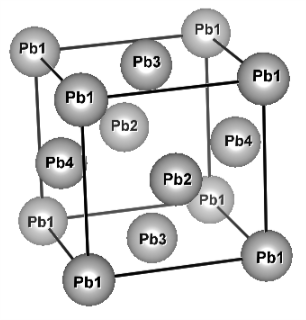

Pb with spin-orbit interaction (multi-atom with QMC)¶
In this tutorial, we perform the DMFT calculation of Pb with the spin-orbit interaction. We compute fcc-Pb, however, we treat it as a four-atom system in the simple cubic cell. This redundancy is just for demonstrating how we compute multi-shell system with SOI. In this tutorial, we use TRIQS/cthyb solver with SOI; this requires additional options of CMake for that solver. For more details, please see Installation.
{kind=link}
SCF calculation of Quantum ESPRESSO¶
&CONTROL
calculation = 'scf'
outdir = './'
pseudo_dir = './'
prefix = 'pb'
/
&SYSTEM
ibrav = 0
nat = 4
ntyp = 1
ecutwfc = 40.000000
ecutrho = 320.000000
occupations = 'smearing'
smearing = "m-p"
degauss = 0.05
noncolin = .true.
lspinorb = .true.
/
&ELECTRONS
mixing_beta = 0.1
diago_full_acc = .true.
/
CELL_PARAMETERS angstrom
4.9402 0.0 0.0
0.0 4.9402 0.0
0.0 0.0 4.9402
ATOMIC_SPECIES
Pb 207.200000 Pb.rel-pbe-dn-kjpaw_psl.0.2.2.UPF
ATOMIC_POSITIONS crystal
Pb 0.000000 0.000000 0.000000
Pb 0.000000 0.500000 0.500000
Pb 0.500000 0.000000 0.500000
Pb 0.500000 0.500000 0.000000
K_POINTS automatic
6 6 6 0 0 0
The pseudopotential is included in rel-pbe.0.3.1.tgz of the THEOS PSLibrary.
$ mpirun -np 4 pw.x -in scf_pb4.in
Wannierization¶
Generate Bloch orbitals for the Wannier¶
Perform non-scf calculation for generating Bloch orbitals that are used in the wannierization.
&CONTROL
calculation = 'bands'
outdir = './'
pseudo_dir = './'
prefix = 'pb'
wf_collect = .true.
/
&SYSTEM
nbnd = 120
ibrav = 0
nat = 4
ntyp = 1
ecutwfc = 40.000000
ecutrho = 320.000000
occupations = 'tetrahedra_opt'
noncolin = .true.
lspinorb = .true.
/
&ELECTRONS
/
CELL_PARAMETERS angstrom
4.9402 0.0 0.0
0.0 4.9402 0.0
0.0 0.0 4.9402
ATOMIC_SPECIES
Pb 207.200000 Pb.rel-pbe-dn-kjpaw_psl.0.2.2.UPF
ATOMIC_POSITIONS crystal
Pb 0.000000 0.000000 0.000000
Pb 0.000000 0.500000 0.500000
Pb 0.500000 0.000000 0.500000
Pb 0.500000 0.500000 0.000000
K_POINTS crystal
27
0.00000000 0.00000000 0.00000000 3.703704e-02
0.00000000 0.00000000 0.33333333 3.703704e-02
0.00000000 0.00000000 0.66666667 3.703704e-02
0.00000000 0.33333333 0.00000000 3.703704e-02
0.00000000 0.33333333 0.33333333 3.703704e-02
0.00000000 0.33333333 0.66666667 3.703704e-02
0.00000000 0.66666667 0.00000000 3.703704e-02
0.00000000 0.66666667 0.33333333 3.703704e-02
0.00000000 0.66666667 0.66666667 3.703704e-02
0.33333333 0.00000000 0.00000000 3.703704e-02
0.33333333 0.00000000 0.33333333 3.703704e-02
0.33333333 0.00000000 0.66666667 3.703704e-02
0.33333333 0.33333333 0.00000000 3.703704e-02
0.33333333 0.33333333 0.33333333 3.703704e-02
0.33333333 0.33333333 0.66666667 3.703704e-02
0.33333333 0.66666667 0.00000000 3.703704e-02
0.33333333 0.66666667 0.33333333 3.703704e-02
0.33333333 0.66666667 0.66666667 3.703704e-02
0.66666667 0.00000000 0.00000000 3.703704e-02
0.66666667 0.00000000 0.33333333 3.703704e-02
0.66666667 0.00000000 0.66666667 3.703704e-02
0.66666667 0.33333333 0.00000000 3.703704e-02
0.66666667 0.33333333 0.33333333 3.703704e-02
0.66666667 0.33333333 0.66666667 3.703704e-02
0.66666667 0.66666667 0.00000000 3.703704e-02
0.66666667 0.66666667 0.33333333 3.703704e-02
0.66666667 0.66666667 0.66666667 3.703704e-02
This k-grid is generated as follows:
$ kmesh.pl 3 3 3
where kmesh.pl is located in the utility/ directory of Wannier90.
Then, run pw.x as
$ mpirun -np 4 pw.x -in nscf_pb4.in
Pre-process for Wannier90¶
Pre-process with wannier90 program. It is always required before pw2wannier.x runs. We will wannierize Pb 6p orbitals.
num_bands = 120
num_wann = 24
spinors = .true.
dis_win_max = 25.0
dis_win_min = 5.84
dis_froz_max = 15.23
dis_froz_min = 5.84
begin projections
Pb1:p(u)
Pb1:p(d)
Pb2:p(u)
Pb2:p(d)
Pb3:p(u)
Pb3:p(d)
Pb4:p(u)
Pb4:p(d)
end projections
write_hr = .true.
bands_plot = .true.
wannier_plot_supercell = 3
begin kpoint_path
G 0.0 0.0 0.0 X 0.5 0.0 0.0
X 0.5 0.0 0.0 M 0.5 0.5 0.0
M 0.5 0.5 0.0 G 0.0 0.0 0.0
G 0.0 0.0 0.0 R 0.5 0.5 0.5
end kpoint_path
begin unit_cell_cart
Ang
4.9402 0.0 0.0
0.0 4.9402 0.0
0.0 0.0 4.9402
end unit_cell_cart
begin atoms_frac
Pb1 0.000000 0.000000 0.000000
Pb2 0.000000 0.500000 0.500000
Pb3 0.500000 0.000000 0.500000
Pb4 0.500000 0.500000 0.000000
end atoms_frac
mp_grid = 3 3 3
begin kpoints
0.00000000 0.00000000 0.00000000
0.00000000 0.00000000 0.33333333
0.00000000 0.00000000 0.66666667
0.00000000 0.33333333 0.00000000
0.00000000 0.33333333 0.33333333
0.00000000 0.33333333 0.66666667
0.00000000 0.66666667 0.00000000
0.00000000 0.66666667 0.33333333
0.00000000 0.66666667 0.66666667
0.33333333 0.00000000 0.00000000
0.33333333 0.00000000 0.33333333
0.33333333 0.00000000 0.66666667
0.33333333 0.33333333 0.00000000
0.33333333 0.33333333 0.33333333
0.33333333 0.33333333 0.66666667
0.33333333 0.66666667 0.00000000
0.33333333 0.66666667 0.33333333
0.33333333 0.66666667 0.66666667
0.66666667 0.00000000 0.00000000
0.66666667 0.00000000 0.33333333
0.66666667 0.00000000 0.66666667
0.66666667 0.33333333 0.00000000
0.66666667 0.33333333 0.33333333
0.66666667 0.33333333 0.66666667
0.66666667 0.66666667 0.00000000
0.66666667 0.66666667 0.33333333
0.66666667 0.66666667 0.66666667
end kpoints
Note
For the following DMFT calculation, the projection of the Wannier function should be the correct order, namely,
begin projections
First_shell(u)
First_shell(d)
Second_shell(u)
Second_shell(d)
:
end projections
The k grid is generated as follows:
$ kmesh.pl 3 3 3 wan
$ wannier90.x -pp pb4
QE to wannier90 interface¶
&inputpp
outdir = './'
prefix = 'pb'
seedname = 'pb'
spin_component = 'none'
write_mmn = .true.
write_amn = .true.
wan_mode = 'standalone'
write_spn = .true.
/
$ mpirun -np 4 pw2wan.x -in pw2wan_pb4.in
Wannier90¶
Execute wannier90.x for the actual wannierization.
The input file is the same as that for the pre-processing run.
$ wannier90 pb
DMFT calculation¶
[model]
lattice = wannier90
seedname = pb
nelec = 8.0
ncor = 4
norb = 6, 6, 6, 6
kanamori = [(4.75, 3.965, 0.3632), (4.75, 3.965, 0.3632), (4.75, 3.965, 0.3632), (4.75, 3.965, 0.3632)]
bvec=[(1.271848,0.0,0.0),(0.0,1.271848,0.0),(0.0,0.0,1.271848)]
spin_orbit = True
[system]
nk0 = 12
nk1 = 12
nk2 = 12
beta = 10.0
with_dc = True
mu = 11.279
[impurity_solver]
name = TRIQS/cthyb
n_cycles{int} = 100000
n_warmup_cycles{int} = 10000
length_cycle{int} = 500
move_double{bool} = True
verbosity{int} = 10
[control]
max_step = 20
restart = True
[tool]
broadening = 0.1
nk_line = 50
nnode = 5
knode=[(G,0.0,0.0,0.0), (X,0.5,0.0,0.0), (M,0.5,0.5,0.0), (G,0.0,0.0,0.0), (R,0.5,0.5,0.5)]
omega_max =10.0
omega_min =-6.0
Nomega = 500
omega_check = 30.0
omega_pade = 150.0
DMFT setup: dcore_pre¶
$ dcore_pre pb4.ini
Running self-consistent DFT+DMFT : dcore¶
$ mpiexec -np 432 dcore pb4.ini
{kind=link}